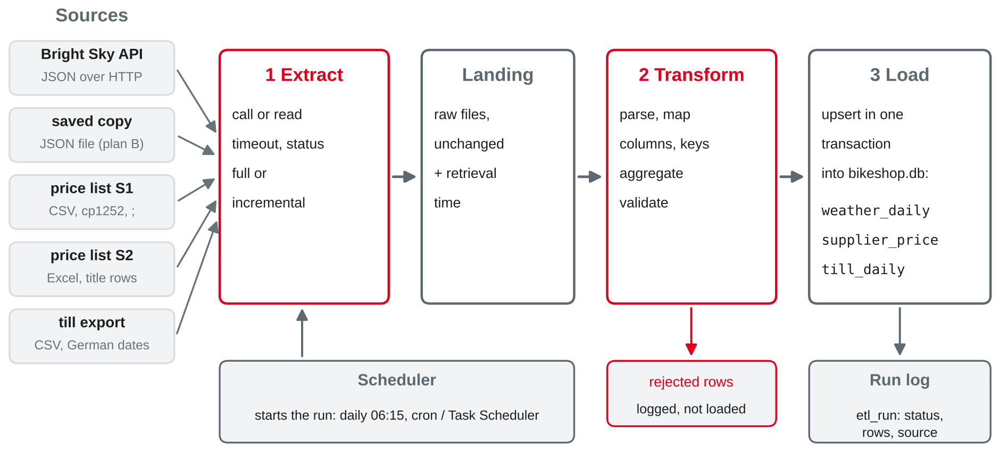
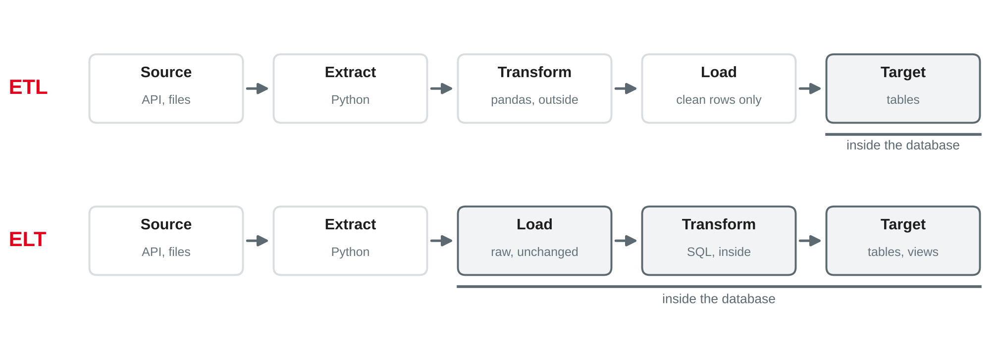

Data Management
Extract–transform–load vs. ELT · pipeline design · scheduling and monitoring
DHBW · Digital Business Management (Business IT) · Semester 2
requestsweather_daily in SQLite — built once, by hand, in a notebookYour preparation: your weather notebook with the raw JSON and weather_daily; a sample of your team's data source. Which cells would you have to run again tomorrow — and in which order?
Session 15 of this course; Rahm and Do (2000).
| Source | Content | Becomes |
|---|---|---|
Bright Sky API or brightsky-mannheim-2026-10-05.json | hourly weather, Mannheim, 5–11 Oct 2026 | weather_daily |
bikeshop-pricelist-s1-session15.csv | price list of S1, German CSV | supplier_price |
bikeshop-pricelist-s2-session15.xlsx | price list of S2, Excel | supplier_price |
bikeshop-till-days-session16.csv | new: daily figures from the till | till_daily |
bikeshop-etl-session16.sql | new: target tables and run log | bikeshop.db |
Own example based on the bike shop case; supplier and till data fictional. Weather data: Deutscher Wetterdienst via de Maeyer (n.d.), CC BY 4.0.
From many sources to one place
| Problem | Bike shop example |
|---|---|
| Schema differs | Preis netto vs. Price EUR; Gültig ab vs. Available from |
| Formats differ | 05.10.2026 vs. 2026-10-05; 3,05 vs. 3.05 |
| Keys differ | supplier article 004711 vs. our part P-101 |
| Meaning differs | price per piece or per pack? local time or UTC? |
Based on DAMA International (2017, Chapter 8) and Rahm and Do (2000).
Extract
Read the data from the sources: API calls, files, database queries. Keep it unchanged in a landing or staging area.
Transform
Make it fit the target: parse, clean, map columns and keys, aggregate, validate (sessions 14–15).
Load
Write it into the target tables — with constraints, in one transaction, without duplicates.
Based on Kimball and Ross (2013, Chapters 19–20), Vassiliadis (2009) and Rahm and Do (2000).

Own illustration based on Kimball and Ross (2013, Chapters 19–20) and Rahm and Do (2000).

| ETL | ELT | |
|---|---|---|
| Transform in | a tool or script outside (pandas) | the target database (SQL) |
| Target receives | clean, conformed rows | raw data first |
| Fits | small targets, sensitive raw data, complex cleaning | powerful cloud warehouses, data lakes, "keep everything" |
Own illustration based on Serra (2024, Chapter 9) and Reis and Housley (2022, Chapter 7).
con.execute("INSERT INTO raw_weather VALUES (?, ?, ?, ?)",
("2026-10-21T10:00:00", "shop", json.dumps(params), body)) # body: the JSON textSELECT substr(j.value ->> 'timestamp', 1, 10) AS day,
round(sum(j.value ->> 'precipitation'), 1) AS rain_mm,
max(j.value ->> 'temperature') AS t_max,
count(*) AS records
FROM raw_weather AS r, json_each(r.body, '$.weather') AS j
GROUP BY day; -- 2026-10-08 | 11.9 | 18.0 | 24 … the same as pandasdate('2026-10-05T00:00:00+02:00') gives 2026-10-04 — SQLite converts to UTCOwn example; SQLite (n.d.-a); weather data: Deutscher Wetterdienst via de Maeyer (n.d.).
Preis netto to price_eur · INSERT … ON CONFLICT · converting 05.10.2026 to 2026-10-05 · saving the API response as a file · summing hourly rain per dayFrom notebook cells to a process that runs every day
| Rule | Why | In our pipeline |
|---|---|---|
| Steps as functions | testable, rerunnable, schedulable | extract(), transform(), load() |
| Raw stays raw | repeat the T without asking the source again | raw/weather_…json |
| Idempotent | a rerun gives the same result, no duplicates | upsert on the primary key |
| All or nothing | no half-loaded tables | one transaction per load |
| Every run leaves a trace | notice errors, prove lineage | etl_run, run_id per row |
Based on Kimball and Ross (2013, Chapters 19–20), Reis and Housley (2022, Chapter 2) and Python Software Foundation (n.d.).
| Full (snapshot) | Incremental (differential) | |
|---|---|---|
| What | everything, every run | only what is new or changed since the last run |
| Needs | nothing | a watermark: last loaded date, ID or change time |
| Fits | small sources: two price lists | growing sources: weather, orders, trips |
| Risk | slow, heavy for the source | missed corrections and late data |
last_loaded = con.execute("SELECT max(day) FROM weather_daily "
"WHERE station = 'Mannheim'").fetchone()[0] # '2026-10-11'
first = last_loaded # overlap: reload the last day
last = (dt.date.today() - dt.timedelta(days=1)).isoformat() # yesterdayBased on Reis and Housley (2022, Chapter 7) and Kimball and Ross (2013, Chapter 19); own example.
def extract(first, last):
params = {**SHOP, "date": first, "last_date": f"{last}T23:00", "tz": "Europe/Berlin"}
try:
r = requests.get(URL, params=params, timeout=10); r.raise_for_status()
data, source = r.json(), "api"
except requests.RequestException:
data, source = json.loads(Path(SAVED).read_text(encoding="utf-8")), "saved copy"
Path(f"raw/weather_{first}_{last}_{stamp()}.json").write_text(json.dumps(data))
return data, source
def transform(data, first, last): # parse, filter, map, aggregate (session 15)
w = pd.DataFrame(data["weather"])
w["timestamp"] = pd.to_datetime(w["timestamp"], utc=True).dt.tz_convert("Europe/Berlin")
w["day"] = w["timestamp"].dt.strftime("%Y-%m-%d")
w = w[w["day"].between(first, last)]
w["station"] = w["source_id"].map({s["id"]: s["station_name"] for s in data["sources"]})
return w.groupby(["station", "day"], as_index=False).agg(…) # rain_mm, wet_hours, …Own example based on session 15; Requests (n.d.); McKinney (2022, Chapters 6 and 10).
Target supplier_price | S1 (CSV) | S2 (Excel) |
|---|---|---|
supplier_no | — (constant 'S1') | — (constant 'S2') |
item_no | Artikel-Nr. (text: 004711) | Item no |
description | Bezeichnung (German) | Description (English) |
part_no → spare_part | Ihre Teile-Nr. | Your part no |
price_eur | Preis netto (3,05) | Price EUR (on request) |
pack_size | VPE | Pack |
valid_from | Gültig ab (01.04.2027) | Available from (Excel date) |
| — | Lagerbestand (dropped) | — |
part_no links to spare_part, if the shop stocks the itemOwn example (fictional supplier price lists); based on Rahm and Do (2000) and DAMA International (2017, Chapter 8).
MAP_S1 = {"Artikel-Nr.": "item_no", "Bezeichnung": "description", "Ihre Teile-Nr.": "part_no",
"Preis netto": "price_eur", "VPE": "pack_size", "Gültig ab": "valid_from"}
MAP_S2 = {"Item no": "item_no", "Description": "description", "Your part no": "part_no",
"Price EUR": "price_eur", "Pack": "pack_size", "Available from": "valid_from"}
p = pd.concat([s1.rename(columns=MAP_S1).assign(supplier_no="S1"),
s2.rename(columns=MAP_S2).assign(supplier_no="S2")])[COLS]
p["price_eur"] = pd.to_numeric(p["price_eur"], errors="coerce") # 'on request' → NaN
p["valid_from"] = p["valid_from"].dt.strftime("%Y-%m-%d")NULL, not as 0Own example (fictional supplier price lists); McKinney (2022, Chapters 6 and 8); pandas development team (n.d.).
| Strategy | What it does | Rerun of 8–11 Oct after 5–8 Oct |
|---|---|---|
to_sql(…, if_exists="replace") | drops the table, creates a new one | constraints gone; only the last run's rows |
to_sql(…, if_exists="append") | adds all rows | with a PK: UNIQUE constraint failed, 0 rows; without: duplicates |
Upsert INSERT … ON CONFLICT DO UPDATE | inserts new keys, updates existing ones | 7 rows; 8 Oct updated |
UNIQUE) that says when two rows are the same thingBased on SQLite (n.d.-b), pandas development team (n.d.) and Kimball and Ross (2013, Chapter 19); own example.
UPSERT = """
INSERT INTO weather_daily (station, day, rain_mm, wet_hours, t_max, sunshine_h, records, run_id)
VALUES (:station, :day, :rain_mm, :wet_hours, :t_max, :sunshine_h, :records, :run_id)
ON CONFLICT (station, day) DO UPDATE SET
rain_mm = excluded.rain_mm, wet_hours = excluded.wet_hours, t_max = excluded.t_max,
sunshine_h = excluded.sunshine_h, records = excluded.records, run_id = excluded.run_id"""
def load(con, daily, run_id):
rows = daily.assign(run_id=run_id).to_dict("records")
with con: # one transaction: all rows or none
con.executemany(UPSERT, rows)
return len(rows)| Run | Days asked | Rows in weather_daily afterwards |
|---|---|---|
| 1 | 5–8 Oct | 4 |
| 2 | 8–11 Oct | 7 (8 Oct updated, not doubled) |
| 3 | 8–11 Oct again | 7 — idempotent |
Based on SQLite (n.d.-b) and Python Software Foundation (n.d.); own example.
For each case: what happens in our pipeline — and is that what we want?
CHECK violation)Preis netto to Nettopreis in the next price listWhat runs when — and how we notice errors
| Option | How | Fits |
|---|---|---|
| By hand | run the notebook or script | one-off loads, development |
| cron (Linux, macOS) | 15 6 * * * python /etl/weather_pipeline.py | one script, one machine |
| Windows Task Scheduler | a task with a daily trigger | the same on Windows |
| Orchestrator (e.g. Airflow) | tasks with dependencies, retries, history | many pipelines that depend on each other |
supplier_price before the margin report; weather and till before the joinBased on The Open Group (2018), Apache Software Foundation (n.d.) and Reis and Housley (2022, Chapter 2).
run_id = start_run(con, "weather") # INSERT INTO etl_run … status 'running'
try:
data, source = extract(first, last)
good, bad, problems = validate(transform(data, first, last), first, last)
n = load(con, good, run_id)
finish_run(con, run_id, "warning" if problems else "ok", source, …, "; ".join(problems))
except Exception as e:
finish_run(con, run_id, "failed", message=f"{type(e).__name__}: {e}"); raise| run | status | source | loaded | rejected | message |
|---|---|---|---|---|---|
| 3 | ok | saved copy | 4 | 0 | |
| 4 | warning | saved copy | 1 | 1 | days missing: 2026-10-13 … 2026-10-21; incomplete days not loaded: 2026-10-12 |
| 5 | failed | FileNotFoundError: … missing.json |
Own example; based on Kimball and Ross (2013, Chapter 19) and Reis and Housley (2022, Chapter 2).
| Check | Question | Bike shop example | If it fails |
|---|---|---|---|
| Freshness | is the newest data recent enough? | max(day) = 11 Oct, today 22 Oct | warn |
| Volume | as many rows as expected? | 24 records per day; 13 price list rows | reject the day / stop |
| Schema | are all expected columns there? | Preis netto still in S1's file | stop |
| Validity | do values pass the rules? | rain_mm >= 0, valid dates | reject the row |
| Integrity | keys unique, references exist? | PK, FK part_no → spare_part | the database refuses |
etl_run, or an e-mail on failedBased on Kimball and Ross (2013, Chapter 19), DAMA International (2017, Chapter 13) and Wang and Strong (1996).
extract_weather → load_weather and extract_till → load_till, then weather_vs_till_reportBased on Apache Software Foundation (n.d.) and Reis and Housley (2022, Chapter 2).
New notebook (or script). Load bikeshop-etl-session16.sql. Predict first, then run.
extract(first, last) and transform(data, first, last); check the result for 5–8 Octoberload() with the upsert. Load 5–8, then 8–11 October. How many rows — and why not 8?raw_weather and compute the daily values with SQL. Same result? Try date() instead of substr()supplier_price and load them. Which parts have no supplier price? Which supplier price is the cheapest per part?till_daily (ISO dates!) and join it with weather_daily. Compare test rides on "bad bike days" (session 15) with the other daysrun_weather() with etl_run. Run it twice, run it incrementally, provoke a failure — then read etl_runOwn example; API: de Maeyer (n.d.); data: Deutscher Wetterdienst, CC BY 4.0; supplier and till data fictional.
Milestone 4 (data loading and quality): your data loaded with Python into your project database, with cleaning steps, checks and a short pipeline description.
Preparation: finish the hands-on and worksheet 16; keep bikeshop.db with weather_daily and till_daily. Think: if the shop wants revenue per day, per weather type and per product group, which tables would you build?